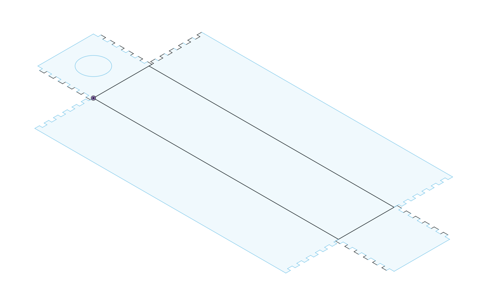

<div class="textcontainer">
<p class="margin"> </p>
<h3>Week 3: Hand Tools and Fabrication</h3>
<h4>Kinetic Sculpture</h4>
<p class = "margin"></p>
For this project, I most took inspiration from the Cranking Cranes Kinetic Scultpure example, where a motor was used to turn an underlying line of wire. This wire, connected to a set of paper cranes would then have the cranes rise and fall.
<p class = "margin"></p>
As a result, I began my developed my idea around the use of a motor and a wire, later deciding to set the wire into a spiral shape. What I originally hoped to do was to place a set of cardboard panels within a cardboard box over the turning spiral cable. In this way, the panels would be set to rise and fall as the wire twisted, but would not shift positions since they are lined up within a box. This would provide a sort of undulating escalator/travelator, which I hoped would be interesting for the project.
<p class = "margin"></p>
However, I would later make two key changes as a result of materials and the potential of the spiral wire. First, I changed the cardboard box to be made of plywood, adapting the long fusion box that I'd previously made by adjusting the thickness of the walls used for the teeth, and using hot glue to secure its shape.
<p class = "margin"></p>
Fusion Box:
<p class = "margin"></p>

<p class = "margin"></p>
Following the creation of the box, the coil had to be adjusted by hand, using references such as a can of hair mousse in order to stretch out the coil to a radius that fits within the box with some space to spare.
<p class = "margin"></p>
One main difficulty I had with the project was while a cardboard version of the box would have maintained the height of its walls, the plywood box would have its walls rest against ground level instead of starting at the ground faces' height. This meant the coil would have more space above and to the sides compared to space that had been lost below. However, some hands-on adjustment allowed it to function well.
<p class = "margin"></p>
Working Coil:
<p class = "margin"></p>
<img src="./coil.gif" width="716" height="537" alt="working coil in long box">
<p class = "margin"></p>
Following the main mechanic was the remaining creative component, which I felt wouldn't have been completed by the lowering and rising platforms. Instead, I came up with the idea of cutting out a line of small manta rays and hope that I might be able to recreate some sort of leaping movement using the spinning coil. However, this did not work, ripping up the line of manta rays.
<p class = "margin"></p>
From this experiment however, I held the line of manta rays above the coil and noted how interesting it looked to have the coil pass by the manta rays and affect it's movement by pushing its fin. The final product then became two pairs of mantas, one side able to tilt from side to side in response to being lifted by the coil, and the other two mimicking a flapping motion. Satisfied by the result, the Kinetic Sculpture "Mantas in a Twister" was complete.
<p class = "margin"></p>
Video:
<video width="716" height="537" controls>
<source src="kineticSculpture.mp4" type="video/mp4">
Your browser does not support the video tag.
</video>
</div>